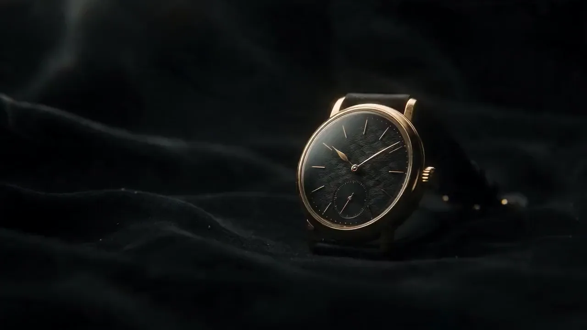
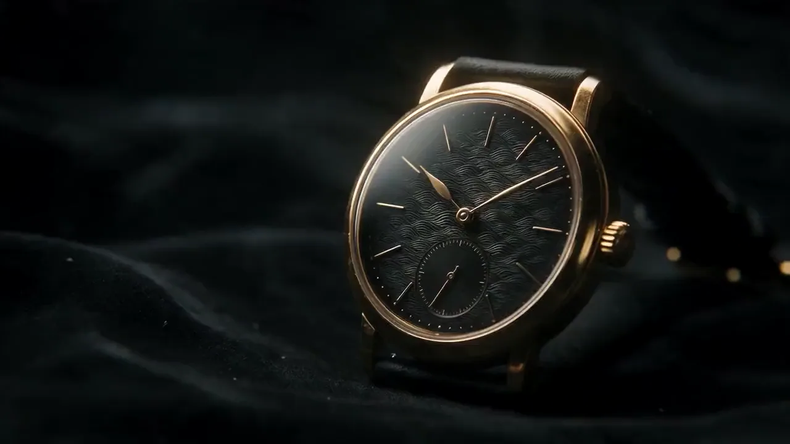
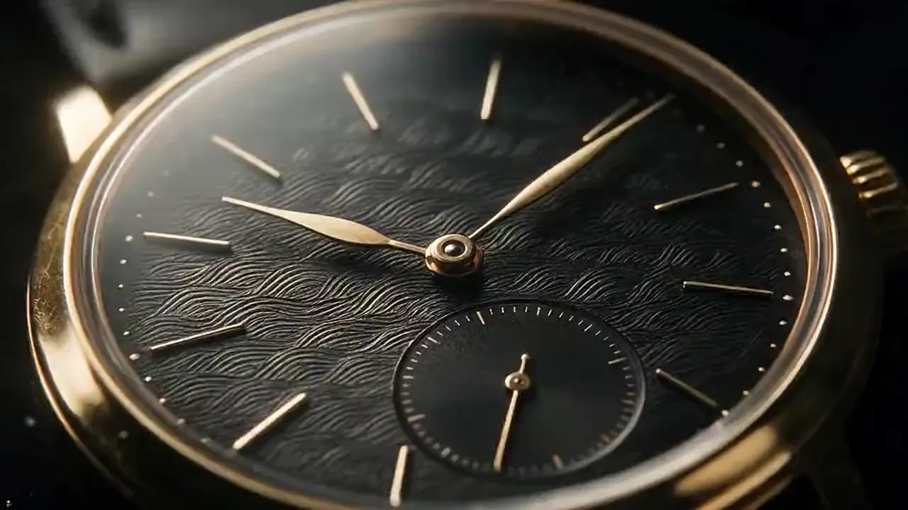
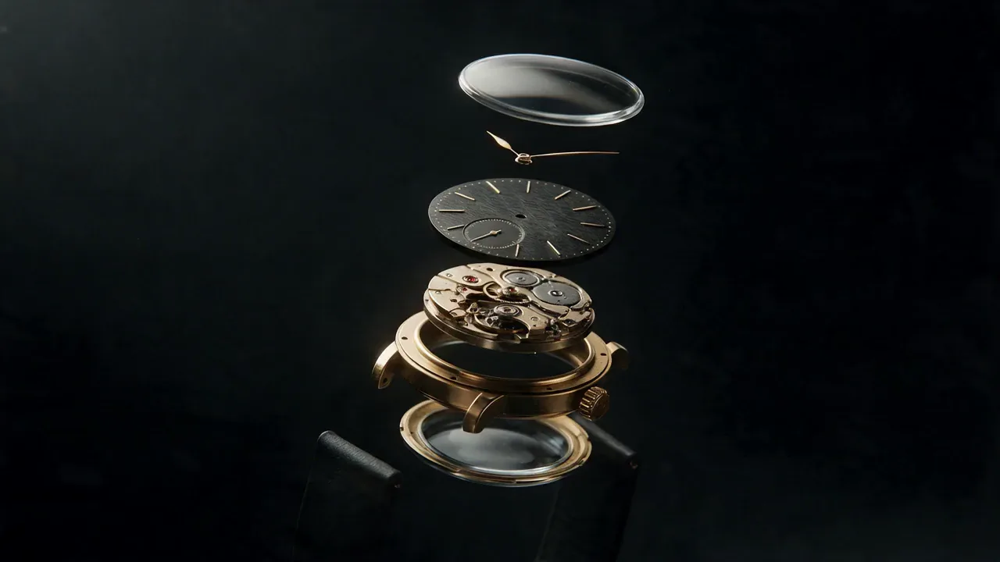
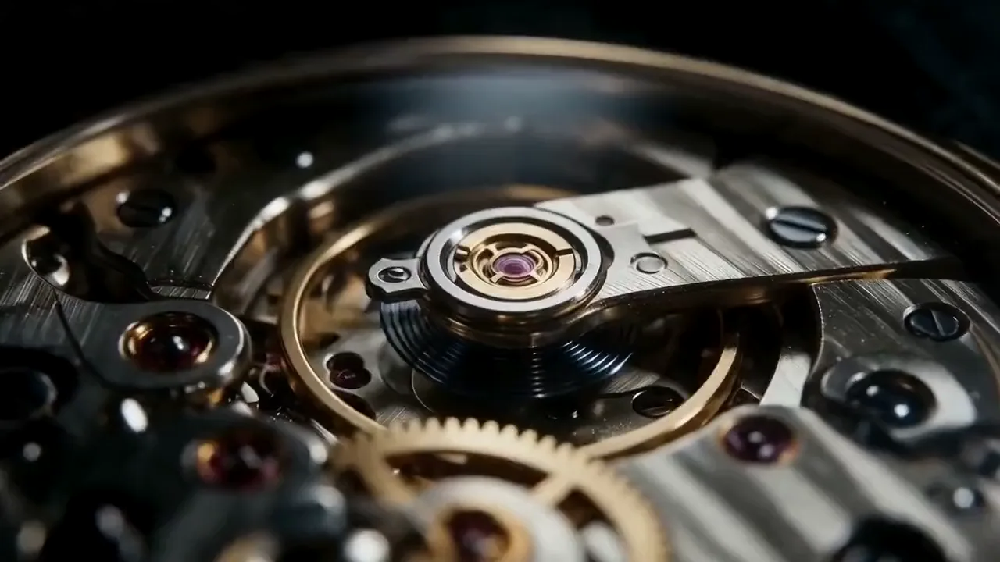

halvet mekanik saat atölyesi
Kuzguncuk'ta tek bir masada, elle kurulan mekanik saatler.
Yılda on iki saat.
Her biri baştan sona tek bir ustanın elinden geçer. Sipariş sırası açıldığında haber veririz.
Kadran elle kazınır.
Siyah zemindeki dalgalar gravür tezgâhında tek tek işlenir. İki kadran hiçbir zaman aynı çıkmaz.
Şimdi içine bakın.
Her parça bu masada ayarlanır, sonra sessizce yerine döner.
- Safir camÇizilmez, iki yüzü yansımasız
- İbrelerAltından, elle eğilmiş
- KadranDalga gravürü
- MekanizmaElle kurmalı, kırk saat çalışır
- Kasa18 ayar sarı altın, 38 mm
- Arka camKalbi görünsün diye
Kalbi saniyede altı kez atar.
Balans çarkı ve mavi spirali. Her sabah kurmayı unutmayın, gerisini o halleder.
Şimdi saat .
Halvet de aynısını söylüyor. Köşedeki kadrana bakın.
Kuzguncuk'taki atölye yalnızca randevuyla açık. Haftada iki misafir.
Halvet Saat Atölyesi · İstanbulUydurma bir markadır.